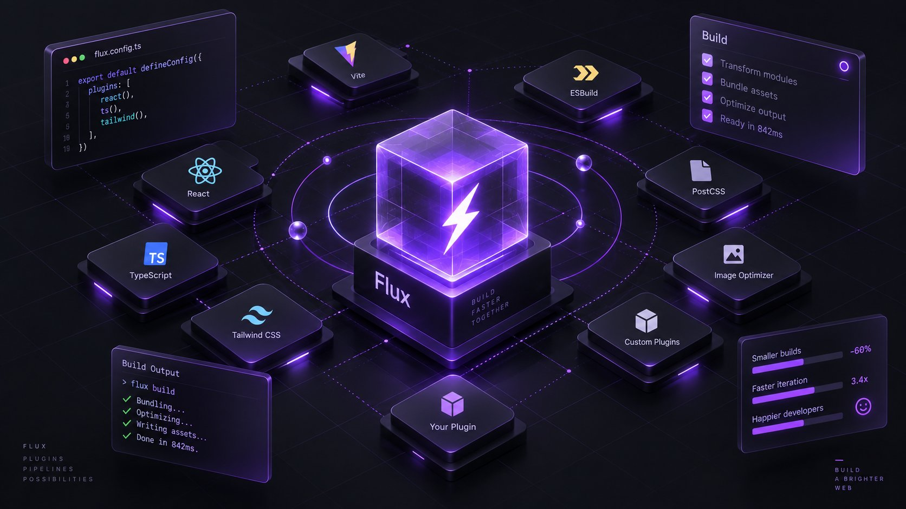
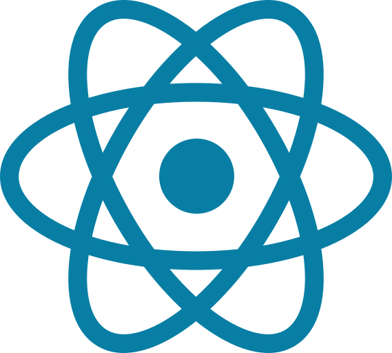
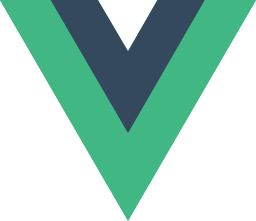
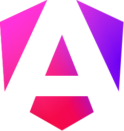
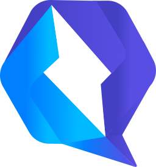

$ flux dev ✓ 214 deps optimized ✓ localhost:5173
Instant server start
Serve source on demand and pre-bundle dependencies before they can slow you down.
Flux is a modern frontend build engine that keeps development moving at the speed of thought.

A sharp toolchain should feel invisible. Flux starts instantly, refreshes precisely and ships compact output.
$ flux dev ✓ 214 deps optimized ✓ localhost:5173
Serve source on demand and pre-bundle dependencies before they can slow you down.
See each change as you save, even when the application grows beyond thousands of modules.
Tree shaking, minification and practical chunk controls are built into the release path.
Extend the engine with familiar hooks, small adapters and framework-level integrations.
Compose your stack from the tools your team already knows.




+A fast engine becomes a platform when the whole ecosystem helps shape it.
“Flux turned our setup step into a moment. The tool gets out of the way.”— Framework author
“The first refresh was so quick we thought nothing happened.”— Product engineer
“A small core and an open plugin model is exactly what the web needs.”— OSS maintainer
A development environment that keeps pace with your next idea.
Read the guide